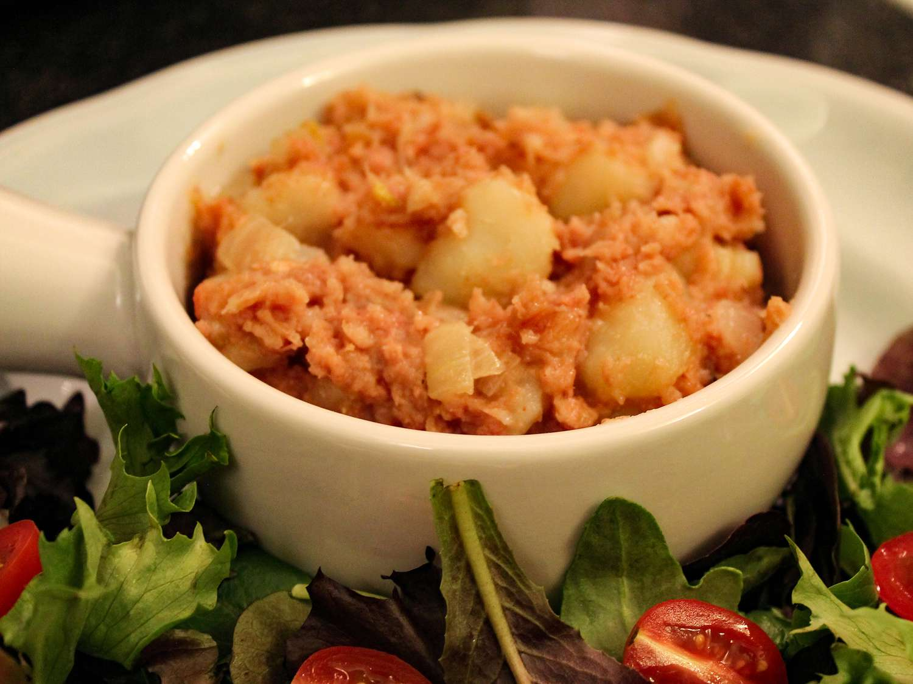

Stovies

Description
Prep Time:
10 mins
Cook Time:
30 mins
Additional Time:
5 mins
Total Time:
45 mins
- 6 large baking potatoes, peeled and cubed
- 1 cup milk
- 1 tablespoon butter
- 1 large onion, roughly chopped
- 1 (12 ounce) can corned beef, cut into chunks
- salt and pepper to taste
Steps
- In a saucepan, combine potatoes and milk. Bring to a boil, reduce heat, and simmer until potatoes are tender, about 30 minutes.
- While potatoes are simmering, melt butter in a skillet over medium high heat. Saute onions until soft and translucent.
- When potatoes are soft, mix in sauteed onions and corned beef. Cook an additional 10 minutes, or until heated through. Season with salt and pepper.
Home